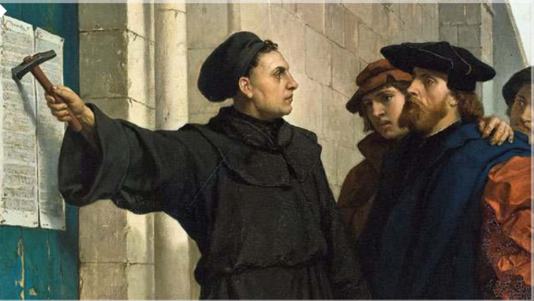
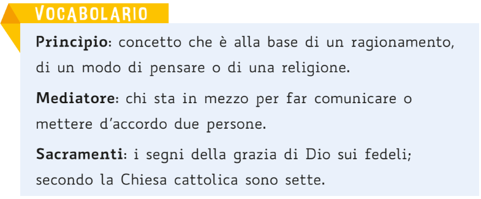
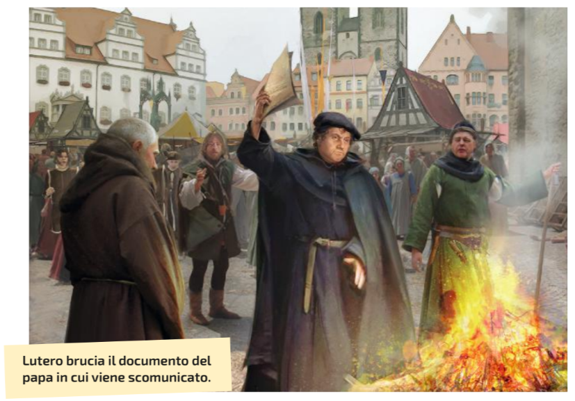
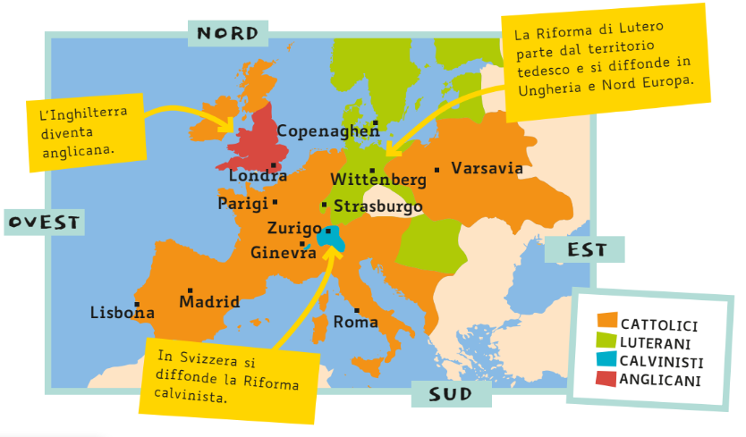

Schema Interattivo: Riforma Protestante e Controriforma
UNITÀ 3: LA RIFORMA PROTESTANTE E LA CONTRORIFORMA CATTOLICA
1. CAUSE DELLA RIFORMA PROTESTANTE: La Crisi della Chiesa di Roma (Inizio '500)
Grave crisi morale dovuta a:
- Lusso e Distacco: il Papa e i cardinali vivevano nel lusso, trascurando i fedeli.
- Vendita delle Indulgenze: pratica molto usata dalla Chiesa per guadagnare denaro (es: Papa Leone X (decimo) usava i soldi ricavati dalla vendita delle indulgenze per la costruzione della Basilica di San Pietro).
Dettaglio: Vendita delle Indulgenze
I peccati potevano essere perdonati in cambio di soldi (elemosine) dati alla Chiesa. Lutero la considerava un imbroglio.
2. L'INIZIATORE DELLA RIFORMA PROTESTANTE: Martin Lutero e le 95 Tesi (1517)

Martin Lutero, frate tedesco e professore di teologia, si opponeva alla vendita delle indulgenze.
- LE 95 TESI: nel 1517 Lutero pubblica le sue idee con 95 Tesi a Wittenberg, denunciando il comportamento della Chiesa e negando l'autorità del Papa.
- Idea Centrale: la salvezza dell'anima si ottiene SOLO con la fede (e non pagando o con le opere).
- Diffusione: le Tesi vengono tradotte dal latino al tedesco e si diffondono rapidamente grazie alla stampa.
3. I PRINCIPI DELLA RIFORMA PROTESTANTE
Con le 95 Tesi, Lutero definisce i principi della sua nuova Chiesa:
- Nel Vangelo: c'è tutto quello che Gesù ha voluto insegnare agli uomini.
- La salvezza: si raggiunge solo con la fede.
- Nessun Mediatore: tutti gli uomini sanno leggere il Vangelo, non c'è bisogno del sacerdote.
- Il Pastore: l'unico riferimento dei fedeli è il pastore, un fedele come gli altri che ha il solo ruolo di guida spirituale. Il pastore può sposarsi e avere figli.
- Autorità: il Papa non ha alcuna autorità.
- Sacramenti: sono validi solo due Sacramenti: ilBattesimo e l'Eucarestia(comunione).
- Le indulgenze: è immorale (=sbagliato) vendere e comprare le indulgenze.

4. REAZIONE CATTOLICA, CONFLITTO E PACE DI AUGUSTA

- Scomunica (1520): Il Papa scomunica Lutero, escludendolo dalla comunità dei fedeli.
- Dieta di Worms: è un'assemblea dei principi tedeschi. L'imperatore Carlo V (quinto) convoca la Dieta a Worms e invita Lutero per convincerlo a sottomettersi. Lutero rifiuta e viene cacciato dall'impero.
- Divisione della Germania: molti principi tedeschi appoggiano Lutero per ottenere maggiore indipendenza dall'Imperatore. La Germania è divisa tra principi cattolici e luterani.
- Pace di Augusta (1555): stabilisce il principio che ogni principe è libero di scegliere la propria fede, ma i sudditi devono seguire la religione del proprio principe, mettendo fine alle guerre.
5. LA DIFFUSIONE DELLA RIFORMA IN EUROPA

La Riforma Luterana si diffonde in Nord Europa: Svezia, Norvegia, Danimarca, Scozia, Olanda.
Nascono anche altre Chiese protestanti:
- Calvinismo: si sviluppa in Svizzera (Zurigo, Ginevra) grazie a Giovanni Calvino.
- Anglicanesimo: nasce in Inghilterra con Re Enrico VIII, che si proclama Capo della Chiesa d'Inghilterra dopo il rifiuto del Papa di annullare il suo matrimonio (per poter divorziare).
- Ugonotti: nome dato ai fedeli protestanti in Francia.
6. LA CONTRORIFORMA CATTOLICA (La Risposta della Chiesa)

La Chiesa di Roma reagisce per arginare la diffusione delle idee protestanti.
- Concilio di Trento (1545): assemblea di tutti i vescovi convocata per prendere decisioni contro la riforma protestante (Controriforma).
- Tribunale dell'Inquisizione: creato per giudicare chi è accusato di eresia (idee contrarie alla Chiesa). Gli eretici erano spesso condannati a morte sul rogo.
- Indice dei Libri Proibiti: Elenco delle opere vietate perché contenevano idee contrarie alla religione cattolica.